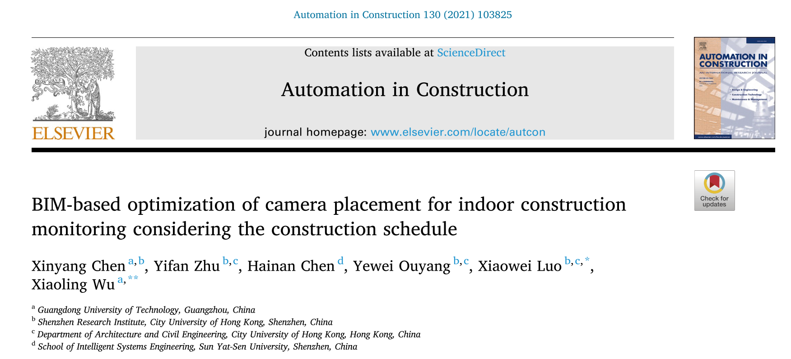
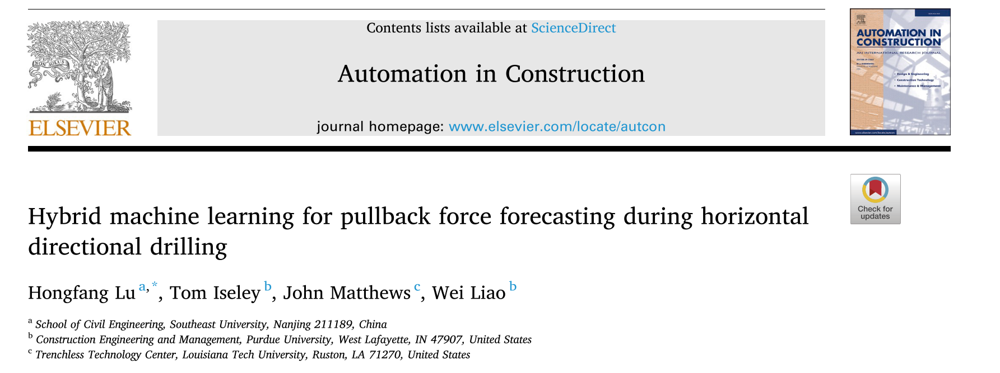
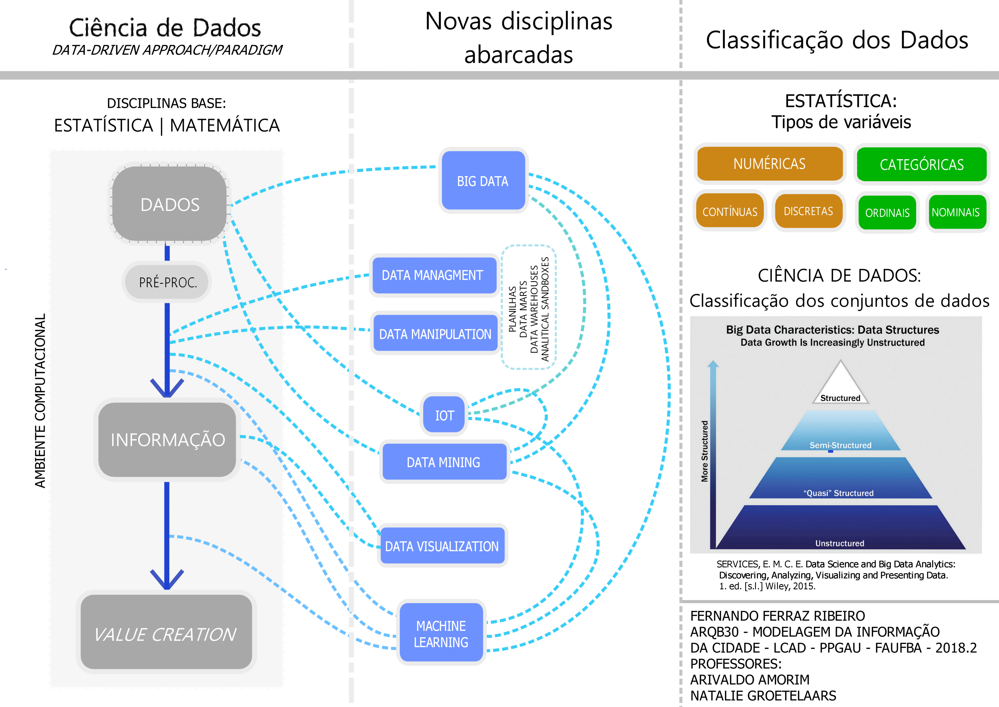

Transformação Digital em Arquitetura e Urbanismo:
novos paradigmas
Miniaula - SENAI-CIMATEC - 16/01/2023
Fernando Ferraz Ribeiro ffribeiro@gmail.com

"The more accurate the map, the more it resembles the territory. The most accurate map possible would be the territory, and thus would be perfectly accurate and perfectly useless."
Neil Gaiman, American Gods
Digital Transformations
O que são transformações digitais?
- "Binários"
- Plain text
Exemplo:
Um aquivo cad contendo um círculo de raio 10, centro na origem e um texto de altura 1 foi salvo nos formatos DWG e DXF (compatíveis com Autocad 2013). Depois os aruivos foram abertos em um programa de plain text.

Arquivo DWG - Binário

Arquivo DXF - plain Text

Os programas, softwares, apps e formatos de arquivos, são definidos em arquivos de teto simples. Programar exige, dente outras habilidades, a familiaridade com os ambientes de edição de código (arquivos plain text)
Exemplos de Arquivos Plain Text Importantes no estado da arte da computação aplicada a arquitetura e urbanismo:
IFC SPF
fonte: https://technical.buildingsmart.org/standards/ifc/ifc-examples/
IFC XML
fonte: https://technical.buildingsmart.org/standards/ifc/ifc-examples/
Arquitetura e construção:
Panorama dos útimos artigos publicados
na revista
AUTOMATION IN CONSTRUCTION
https://www.journals.elsevier.com/automation-in-constructionLinha Editorial:
Automation in Construction is an international journal for the publication of original research
papers. The journal publishes refereed material on aspects
pertaining to the use of Information Technologies in Design, Engineering, Construction
Technologies, and Maintenance and Management of Constructed Facilities. The scope of
Automation in Construction is broad, encompassing all stages of the construction life cycle from
initial planning and design, through construction of the facility, its operation and
maintenance, to the eventual dismantling and recycling of buildings and engineering structures.
The following list of topics is not intended to be exhaustive, but rather to indicate topics
that fall within the journal's purview:
- Computer-aided design, product modeling, decision support systems, classification and standardization, product data interchange
- Computer-aided engineering, process simulation models, graphics
- Robotics, metrology, logistics, automated inspection, demolition/remediation
- Facilities management, management information systems, intelligent control systems.
Dados Biliométricos

Artigos recentes:

Conforme acesso no dia 23/07/2021
Artigo 01:
 https://crossmark.crossref.org/dialog/?doi=10.1016/j.autcon.2021.103825&domain=pdfArtigo 02:
 https://www.sciencedirect.com/science/article/pii/S0926580521002272?via%3Dihub
https://www.sciencedirect.com/science/article/pii/S0926580521002272?via%3Dihub
Artigo 03:
 https://www.sciencedirect.com/science/article/pii/S0926580521002612?via%3DihubArtigo 04:
https://www.sciencedirect.com/science/article/pii/S0926580521002569#f0005Extra:
Parametric Solutions
https://www.parametric.se/
Urbanismo e Cidades:
Panorama dos útimos artigos publicados na
revista
Cities
https://www.journals.elsevier.com/citiesLinha Editorial:
Cities publishes articles on many aspects of urban planning and policy. It distinguishes itself
by providing an international and interdisciplinary platform for the exchange of ideas and
information among urban planners, policy makers and analysts, and urbanists from all
disciplines.
The primary aims of the journal are to analyze and assess past and present urban development and management as a reflection of effective, ineffective and non-existent planning policies; and the promotion of the implementation of appropriate urban policies in both the developed and the developing world.
Topics covered include: urban adaptation to climate change; gentrification and housing; homelessness and welfare services; urban management; public-private sector cooperation; development and planning problems; urban regeneration; neighborhood conservation and urban design; immigration and international labor migration; urban politics; urban theory; urban governance; smart cities and regions; infrastructure; livability and quality of life; greening; and the complexities of creating sustainable cities.
Every year, we also publish a handful of Viewpoints. These are articles that are shorter in nature, summative in their literature review, and offer a particular argument that could potentially generate debates among scholars and practitioners.
Each volume also features one or more City Profiles. Coverage includes a brief description of the city's historical development, an account of contemporary conditions, problems or issues, and a critical review of recent or current policy, planning or management responses.
The primary aims of the journal are to analyze and assess past and present urban development and management as a reflection of effective, ineffective and non-existent planning policies; and the promotion of the implementation of appropriate urban policies in both the developed and the developing world.
Topics covered include: urban adaptation to climate change; gentrification and housing; homelessness and welfare services; urban management; public-private sector cooperation; development and planning problems; urban regeneration; neighborhood conservation and urban design; immigration and international labor migration; urban politics; urban theory; urban governance; smart cities and regions; infrastructure; livability and quality of life; greening; and the complexities of creating sustainable cities.
Every year, we also publish a handful of Viewpoints. These are articles that are shorter in nature, summative in their literature review, and offer a particular argument that could potentially generate debates among scholars and practitioners.
Each volume also features one or more City Profiles. Coverage includes a brief description of the city's historical development, an account of contemporary conditions, problems or issues, and a critical review of recent or current policy, planning or management responses.
Dados Biliométricos

Artigos recentes:

Conforme acesso no dia 23/07/2021
Artigo 01:
 https://www.sciencedirect.com/science/article/pii/S0264275121002468?via%3Dihub
https://www.sciencedirect.com/science/article/pii/S0264275121002468?via%3Dihub
Artigo 02:
 https://www.sciencedirect.com/science/article/pii/S0264275121002456?via%3Dihub
https://www.sciencedirect.com/science/article/pii/S0264275121002456?via%3Dihub
Artigo 03:
 https://www.sciencedirect.com/science/article/pii/S0264275121002298?via%3Dihub
https://www.sciencedirect.com/science/article/pii/S0264275121002298?via%3Dihub
Artigo 04:
 https://www.sciencedirect.com/science/article/pii/S026427512100233X?via%3Dihub
https://www.sciencedirect.com/science/article/pii/S026427512100233X?via%3Dihub
Reflexões:
Reflexões:
https://d.ibtimes.co.uk/en/full/1622009/will-robots-take-over-our-jobs.jpg